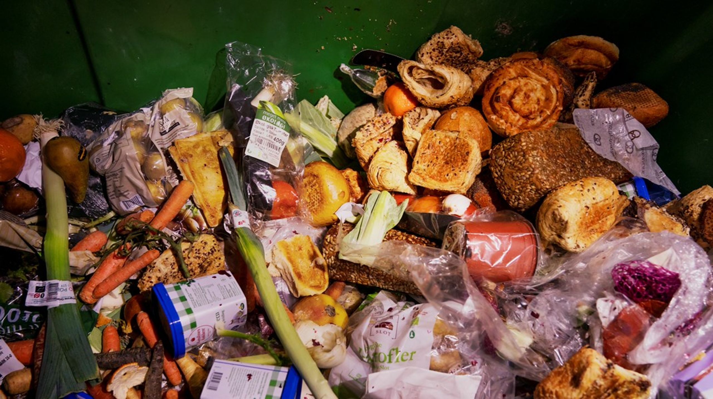
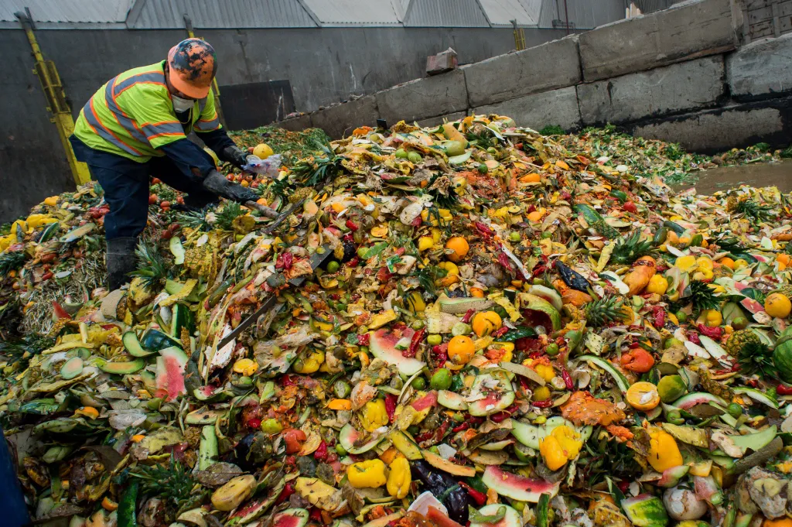

Lad os bekæmpe madspild sammen!

Værd at vide om madspild
Madspildet i den danske servicesektor udgør
227.000-ton pr. år. Til sammenligning er det
samlede madspild fra husholdningerne
261.000-ton pr. år.
Vidste du?
Den største madspild i servicesektoren stammer
fra detailhandelen, der spilder 163.000 tons pr.
år, svarende til 72 % af servicesektorens
madspild.
Detailhandlens specialforretninger

Af detailhandelens madspild står
specialforretninger som slagtere,
fiskeforretninger og grønthandlere for 12.000
tons pr. år, mens ikke-specialiserede forretninger
som kiosker, købmænd, supermarkeder og
varehuse står for 151.000-ton pr. år.
Forbrugernes skyld
Samlet set udgør madspild hos forbrugerne 260.942 ton pr. år i Danmark.
Årligt madspild fra husholdningerne udgør 261.000 ton pr. år.